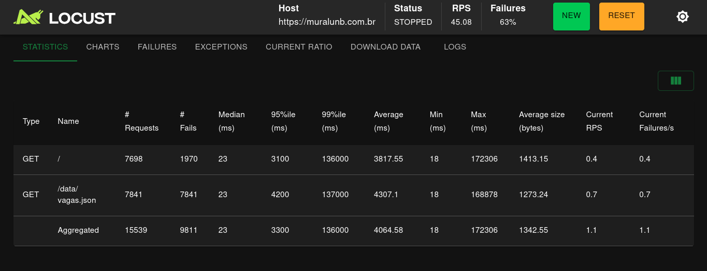
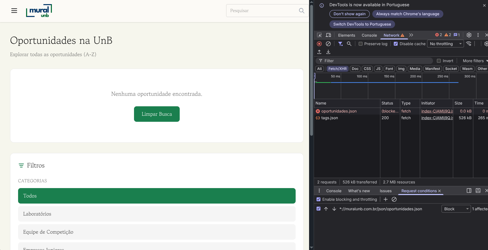
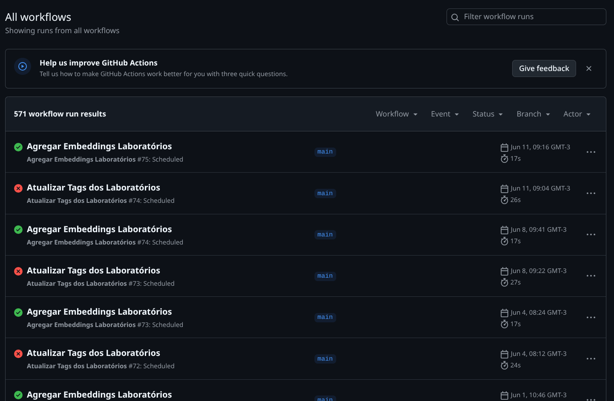
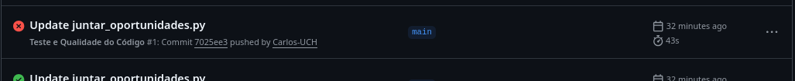

Relatório de Avaliação de Confiabilidade - Fase 4
Histórico de Versões
| Versão | Descrição | Autor | Data |
|---|---|---|---|
| 1.0 | Inserção das coletas, resultados e conclusão | Yogi e Carlos | 12/06/2026 |
1. Obtenção das Medidas e Dados Brutos
As medições foram executadas seguindo o Plano de Avaliação estabelecido na Fase 3. Os dados coletados refletem o comportamento real da arquitetura do Mural UnB sob testes de estresse, injeção de falhas e monitoramento passivo.
1.1 Evidências Visuais da Coleta (Screenshots)
M1.1 - Disponibilidade do Domínio (UptimeRobot)
Descrição: Painel do UptimeRobot comprovando a disponibilidade contínua do domínio muralunb.com.br, com 100% de uptime registrado nas últimas 24 horas.
M1.2 - Teste de Carga e Estabilidade (Locust)
Descrição: Interface do Locust exibindo 15.539 requisições totais durante o teste de estresse. Observa-se a falha integral (100%) no endpoint /data/vagas.json e bloqueios parciais na rota raiz /.

M1.3 - Resiliência do Frontend (Chrome DevTools)
Descrição: Teste de bloqueio de rede via DevTools. A requisição de oportunidades.json foi bloqueada manualmente. A interface não colapsou em tela branca, renderizando o estado vazio ("Nenhuma oportunidade encontrada").

M2.1 - Injeção de Erro de Sintaxe no Pipeline
Descrição: Injeção do código import erro_proposital_teste no script extrair_empresas_juniores.py diretamente no repositório para forçar a quebra da execução do ETL.

M2.1 - Status dos Workflows após Injeção
Descrição: Registro do GitHub Actions mostrando o fluxo "Processar Empresas Juniores" finalizando com status de sucesso verde ("Successful in 17s"), mascarando o erro real do Python devido à má configuração do arquivo .yml.

M2.1 - Integridade do Repositório pós-falha
Descrição: Comprovação da preservação dos dados de produção. Os arquivos .json na pasta data/EJs/ não sofreram commits recentes (mantidos há 7 meses), confirmando que a falha não corrompeu os arquivos existentes.

M2.2 - Histórico Geral de Execuções (Gargalo de Manutenção)
Descrição: Visão geral das Actions, evidenciando o padrão cronológico de execuções com sucesso intercaladas com falhas sistemáticas no fluxo de laboratórios.

M2.2 - Histórico Filtrado de Falhas Crônicas
Descrição: Filtro is:failure destacando falhas contínuas e não resolvidas do script "Atualizar Tags dos Laboratórios" ao longo de vários meses, impedindo o cálculo do MTTR e evidenciando abandono de manutenção.

M2.3 - Teste de Persistência com Dados Corrompidos
Descrição: Comprovação da inserção da exceção intencional (raise Exception("Erro forçado...")) no script de consolidação e a consequente falha correta do workflow no Actions (exit code 1), garantindo que os 83 registros previamente estabelecidos não fossem apagados.


2. Processamento de Dados e Níveis de Pontuação
Os dados brutos coletados foram aplicados às fórmulas matemáticas definidas no modelo GQM para determinar o nível de maturidade de cada indicador.
Tabela 1: Consolidação das Métricas e Julgamento de Nível
| Métrica | Característica | Cálculo / Cenário Observado | Nível de Pontuação (Fase 2) |
|---|---|---|---|
| M1.1 | Disponibilidade | \(100\%\) de uptime registrado nas últimas 24 horas. | Excelente |
| M1.2 | Estabilidade | \(\left(\frac{5.728 \text{ (Sucessos)}}{15.539 \text{ (Total)}}\right) \times 100 = 36,86\%\) | Inadequado |
| M1.3 | Resiliência Front | \(0\%\) de quebra de DOM / Mensagem amigável renderizada em \(5/5\) testes. | Excelente |
| M2.1 | Integridade Pipeline | Sistema abortou antes da gravação. \(0\) bytes corrompidos em produção. | Excelente |
| M2.2 | Recuperação (MTTR) | Erro persistente há \(> 3\) meses. Sem aplicação de correção definitiva. | Inadequado |
| M2.3 | Persistência | \(\left(\frac{83 \text{ (Pós-falha)}}{83 \text{ (Pré-falha)}}\right) \times 100 = 100\%\) de retenção de registros. | Excelente |
3. Análise GQM e Julgamento das Hipóteses
Q1: A interface se mantém disponível perante falhas assíncronas?
- Julgamento: Parcialmente Adequado.
- Análise: O site hospedado no GitHub Pages possui excelente disponibilidade de infraestrutura base (M1.1 = 100%). Perante a ausência do arquivo de dados principal (
oportunidades.json), o ecossistema React (M1.3) provou-se resiliente contra travamentos críticos (quebra de DOM/tela branca), renderizando com sucesso um estado vazio (empty state). Contudo, a usabilidade é prejudicada, pois o usuário recebe a mensagem falsa de que "não há oportunidades cadastradas" em vez de um aviso de erro de rede.
Q2: O sistema suporta picos de tráfego sem degradação?
- Julgamento: Vulnerável / Hipótese Refutada.
- Análise: A rota principal (
/) suportou parte do tráfego, mas sofreu descarte de conexões com 1.970 falhas. O endpoint de dados estáticos (/data/vagas.json) apresentou colapso de 100%, falhando em todas as 7.841 tentativas. A infraestrutura de hospedagem atual restringe ativamente requisições sequenciais originadas do mesmo IP (mecanismo de Rate Limiting ou proteção DDoS implícita), impossibilitando o funcionamento do sistema sob estresse severo de acessos simultâneos.
Q3: O pipeline protege os dados em caso de falha de script e é corrigido rapidamente?
- Julgamento: Inadequado / Hipótese Refutada.
- Análise: O isolamento cumpre o papel de proteção passiva (M2.1 = 100%). Os scripts Python quebram antes de invocar comandos de sobrescrita destrutiva, mantendo a base de produção segura. No entanto, a premissa de correção rápida em menos de 24 horas falhou completamente. O workflow agendado de laboratórios está quebrado de forma ininterrupta desde 2 de abril de 2026, evidenciando ausência de monitoramento por parte da equipe de engenharia.
Q4: A restauração pós-falha garante a consistência dos registros válidos?
- Julgamento: Adequado.
- Análise: O isolamento e o comportamento atômico do pipeline garantem que erros em dados novos ou malformados não corrompam os dados estáveis preexistentes. O arquivo consolidou 100% de persistência (83/83 registros mantidos sem perdas), mitigando o efeito cascata de um carregamento falho (M2.3).
4. Conclusão e Plano de Ação
A avaliação de confiabilidade do Mural UnB expôs uma arquitetura robusta em sua integridade de dados estáticos, mas frágil em aspectos operacionais sob estresse e manutenção corretiva. O pipeline mascara quebras de execução devido à diretiva continue-on-error: true no arquivo .yml, gerando logs com falso status de "Successful" para execuções que falharam internamente.
Para elevar o nível de confiabilidade do sistema, a equipe de desenvolvimento deve executar as seguintes ações:
- Remoção de Máscaras de Logs (Severidade Alta): Excluir a configuração
continue-on-error: truedos workflows.github/workflows/1_ejs_extrair_dados.ymle equivalentes. Falhas no script de extração devem interromper o job do GitHub Actions de forma explícita para alertar os mantenedores. - Mitigação do Bloqueio de Carga (Severidade Alta): Posicionar uma camada de CDN (ex: Cloudflare) à frente do domínio
muralunb.com.br. O cacheamento do arquivo JSON na borda (edge) evitará o bloqueio por Rate Limiting do servidor de origem, absorvendo as requisições simultâneas constatadas no teste do Locust. - Resolução de Erros Crônicos (Severidade Média): Corrigir o script associado ao workflow
Atualizar Tags dos Laboratórios, paralisado desde abril de 2026, restabelecendo a atualização automatizada da plataforma. - Tratamento de Exceções de Rede no Front (Severidade Baixa): Ajustar o componente de erro do React para diferenciar um arquivo JSON vazio (sem vagas) de uma requisição bloqueada por HTTP 4xx/5xx, exibindo um alerta claro de "Erro de conexão" para o usuário final.
5. Declaração de Uso de IA
Tabela: Declaração Formal de Uso de IA
| Ferramenta | Tarefa Realizada | Conferência Humana |
|---|---|---|
| Gemini 3.1 Pro | Revisão de passo a passo de acordo com fase 3 e conferências de ortografia e dúvidas técnicas. | Validação das informações sugeridas revisando a fase 3 e ajustando o texto. |